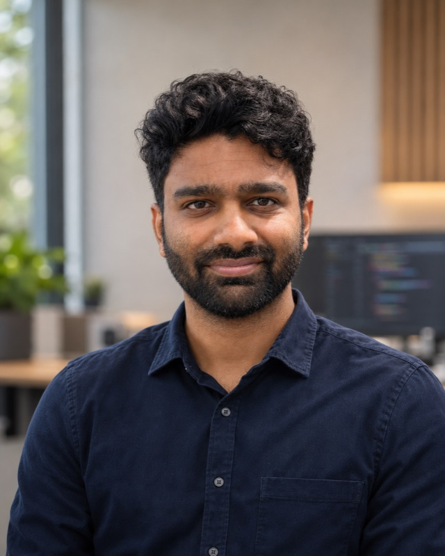

Annual cloud savings
Cloud optimization at Lyric, including a move from AMD64 to ARM64.
Explore the contextChennai, India / Vanakkam!
Satheesh PrabhakaranDevSecOps & Platform Engineering Lead
DevSecOps & platform engineering leader. I turn cloud complexity into secure platforms, reliable delivery, and measurable business impact.
Explore my work
01 / Perspective
Platforms should make the safe path the easy path.
I design and operate the platforms behind engineering teams: cloud infrastructure, Kubernetes clusters, delivery pipelines, observability, and security controls.
At Lyric, I have helped build the engineering foundation from the founding stage through successive growth phases. My work includes an Internal Developer Platform, Argo CD workflows, and isolated preview environments for AI-assisted development.
I connect infrastructure decisions to operational outcomes: reducing cloud spend, making deployments repeatable, and integrating security into engineering workflows. My experience spans AWS, Azure, GCP, and earlier OpenStack and Ceph environments.
B.Tech · Government College of Technology · 2009 – 2013 · Coimbatore, Tamil Nadu
02 / Measurable outcomes
Cloud optimization at Lyric, including a move from AMD64 to ARM64.
Explore the contextFrom private cloud and automation to founding-stage platform leadership.
Explore the contextEngineering experience across AWS, Azure, and GCP.
Explore the contextSecurity is part of delivery. Security leadership for ISO 27001 and SOC 2 at Lyric, alongside platform ownership and developer experience.
03 / Career trajectory
DevSecOps and Platform Lead
Founding engineering member through 0 → 1, 1 → 10 and now 10 → 100.
DevOps Lead
Led the DevOps transformation away from legacy monolithic deployments.
DevOps Lead
Moved .NET Framework apps to .NET Core and split a monolith into microservices on Docker and Kubernetes (Deltatre).
Associate Software Engineer
Built and managed SDN environments for Versa Controllers (Comcast).
Product engineering
Open-sourcing SecretMesh.
04 / Selected work
Open-source products, infrastructure experiments, and a little help for friends. Each has a different story.
8 projectsOpen source
Multi-cloud secrets governance, Apache 2.0
A control plane over AWS Secrets Manager, Azure Key Vault and GCP Secret Manager. Secret values never leave your vaults and are never stored by SecretMesh.
Open source
Walking companion prototype with fictional AI characters, optional GPS and offline stories
Walking companion prototype with fictional AI characters, optional GPS and offline stories.
Open source
Map exploration MVP with nearby discoveries, Surprise Me and local bookmarks; under development
Map exploration MVP with nearby discoveries, Surprise Me and local bookmarks; under development.
Infrastructure
Planning-stage multi-cloud FinOps platform for cost visibility, allocation and optimization
Planning-stage multi-cloud FinOps platform for cost visibility, allocation and optimization.
Friendly help
Helping a friend build research tooling: RAG and knowledge graphs for academic papers, with a three-VM GCP setup, Cloud NAT and IAP-only SSH.
As friendly help, I supported a friend with research tooling and its GCP infrastructure. Researchers upload a paper and see how it connects to an indexed corpus. PDFs become structured documents, then semantic chunks with BGE-M3 embeddings in Qdrant, plus a provenance-linked knowledge graph in Neo4j. I split it across three GCP VMs so heavy ingestion never blocks the API, with private networking and IAP-only SSH.
Websites
Seven-page redesign, every photo and testimonial kept
Seven-page redesign, every photo and testimonial kept.
Websites
Single static page on GitHub Pages
Single static page on GitHub Pages.
Infrastructure
Per-change k3s/k3k environments for an AI-agent workflow
Per-change k3s/k3k environments for an AI-agent workflow.
05 / Under the hood
Three real systems. Open a component to explore its responsibilities. These are high-level views of the work, not production topology specifications.
At Lyric, platform work combines an Internal Developer Platform with Argo CD delivery and per-change preview environments on k3s/k3k. The engineering focus is repeatable deployment and isolated environments that support both developers and AI-assisted changes.
Application code and deployment configuration
Argo CD · GitOps workflows
Per-change previews · k3s / k3k
SecretMesh separates secrets governance from secret storage. The control plane persists inventory and policy metadata; secret values remain in native cloud vaults. Identity, approvals, OPA policies, and audit records govern execution. A dedicated secret type is designed to prevent accidental logging or serialization.
UI · API · inventory · policies
identity · approval · OPA · audit
CRUD · rotation · jobs
AWS · Azure · GCP
As friendly help, I supported a friend with research tooling and its GCP infrastructure. Researchers upload a paper and see how it connects to an indexed corpus. PDFs become structured documents, then semantic chunks with BGE-M3 embeddings in Qdrant, plus a provenance-linked knowledge graph in Neo4j. I split it across three GCP VMs so heavy ingestion never blocks the API, with private networking and IAP-only SSH.
nginx · TLS · Expo web · uvicorn
Docling · GLiNER · GLiREL · GCS
Neo4j · Qdrant
06 / Engineering toolkit
Explore the technologies behind the work. Practical experience, without arbitrary proficiency scores.
Production EKS, security monitoring, and multi-cloud FinOps.
Multi-VM RAG infrastructure and centralised FinOps visibility.
EKS, AKS, GKE, K3s and k3k; reliability, scaling and ephemeral preview environments.
Reusable modules, peer-reviewed plans and blast-radius checks.
Organisation-wide GitOps with ApplicationSets, App-of-Apps and progressive delivery.
Self-hosted and Kubernetes runners for regression suites.
Zero Trust, DNS, edge configuration and Workers.
Enterprise observability with OpenTelemetry, Prometheus, Thanos and ClickHouse.
Error tracking correlated with logs and traces during incidents.
ERPNext apps, RAG pipelines and platform automation.
Next.js apps and Node services for commerce, ERP and marketplaces.
Ubuntu servers, native local dev, and everything in between.
07 / Working notes
Original engineering and design briefs, preserved as a look at how the work was framed.
SecretMesh
Build SecretMesh as a cloud-native control plane with zero secret-value persistence. Secret values remain inside the customer's AWS Secrets Manager, Azure Key Vault or GCP Secret Manager. Redact them from logs, traces, error messages, crash dumps and telemetry.
Tiny Seeds Playschool
Redesign the scraped site with serif typography, outlined layouts, primary colours and photography. Keep every gallery photo, testimonial, service, address and contact detail, and add a check that proves nothing was lost.
Profile
Make my profile like walkwithmaryam.vercel.app, with my photo and all prompts. Projects whatever we worked on here can be added.
08 / Start a conversation
Secure platforms. Better developer experiences. Room for the next challenge.
Connect about DevSecOps, cloud security, platform engineering, or the work you see here.
vsp6692@gmail.com